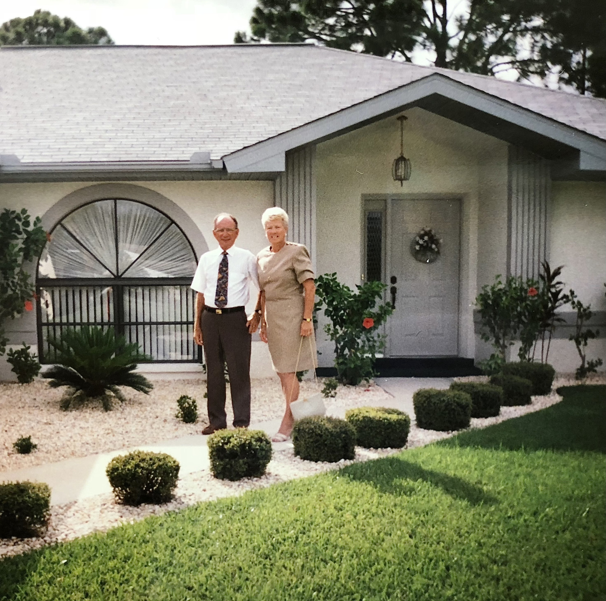

WELCOME FAMILY BENEFICIARIES

Each of you is an equal beneficiary of the combined assets of Grandmom &
Poppy — which includes the house & its contents.
The purpose of this website is to provide a structure to distribute
any house contents that beneficiaries might want prior to selling the house.
PROCEDURE
-
Please review this House Contents Inventory.
A search bar is at the top. Clicking a photo opens a new browser window with an
enlarged photo.
-
Items identified as *Sells with House are not available for distribution
to beneficiaries herein. (But beneficiaries will receive their value eventually — as
inherent to the increased house value "For Sale" package.)
-
Send me an eMail with the items you wish
to possess. Please include the item name & number.
-
I will post a list showing items chosen & by whom.
-
Items not chosen by any beneficiary — will either be sold with the
house or sold to a "collectibles" merchant for cash value that then pours back
into the estate for equal division among the 8 beneficiaries.
-
Items chosen by only one beneficiary — will be granted & given
to that beneficiary free — as would be the wish of Grandmom and Poppy.
-
Items chosen by multiple beneficiaries — will have two solutions:
-
SWAP — Beneficiaries can reconsider their own choices & negotiate
informally with each other about changing preferences & swap to accommodate each
other.
-
AUCTION — Multiple beneficiaries wishing a specific item can choose
to bid for it in an auction, coordinated by me. Highest bidder (after any
counter-bidding rounds) "wins" the item & writes a check to pay for it —
the proceeds of which will be equally divided among all beneficiaries.
Thus, the auction benefits all beneficiaries.
-
Some beneficiaries may wish none or only a few household items, while other beneficiaries may wish
quite a few. Fair distribution does not mean that we each receive the exact number
of items but that we are happy for other beneficiaries to have items that we do not wish
ourselves. Fairness is what we collectively agree for it to be — not
confined merely to mathematical equivalency.
-
Kenster will mail smaller items to you at his expense.
Larger items would need to be picked up from the house.